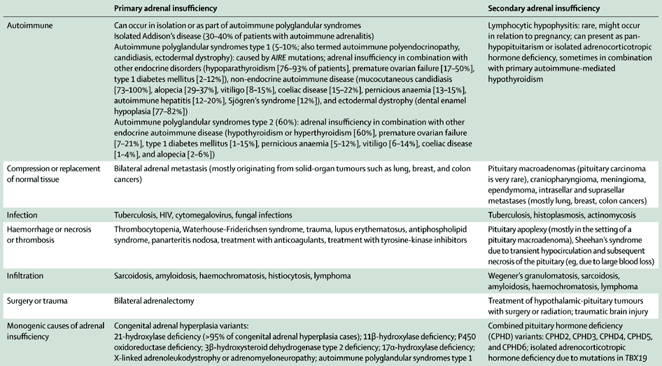
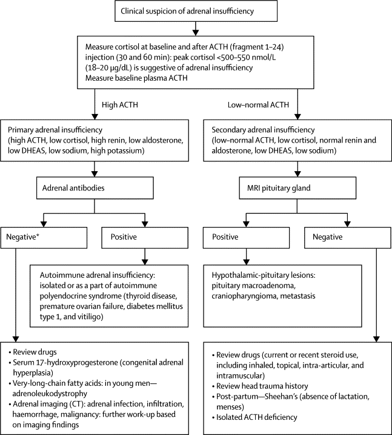

Adrenal insufficiency continues to be a challenge for patients, their physicians, and researchers. During the past decade, long-term studies have shown increased mortality and morbidity and impaired quality of life in patients with adrenal insufficiency. These findings might, at least partially, be due to the failure of glucocorticoid replacement therapy to closely resemble physiological diurnal secretion of cortisol. The potential effect of newly developed glucocorticoid drugs is a focus of research, as are the mechanisms potentially underlying increased morbidity and mortality. Adrenal crisis remains a threat to lives, and awareness and preventative measures now receive increasing attention. Awareness should be raised in medical teams and patients about adrenal insufficiency and management of adrenal crisis to improve clinical outcome.
Adrenal insufficiency is caused by failure of the adrenal cortex to produce cortisol. This failure can result from loss of function of the adrenal glands (ie, primary adrenal insufficiency), which is most frequently caused by autoimmune adrenalitis (Addison's disease) and inherited disruption of glucocorticoid synthesis by congenital adrenal hyperplasia.1, 2, 3, 4 Secondary adrenal insufficiency is caused by impaired hypothalamic-pituitary regulation of synthesis of adrenal cortisol, mostly caused by tumours of the hypothalamic-pituitary region and their treatment with surgery or radiotherapy.5 However, long-term exogenous glucocorticoid treatment also invariably causes adrenal insufficiency, with potential reversibility after gradual treatment withdrawal.
Thomas Addison first described the clinical phenotype of primary adrenal insufficiency in 1855;6 a fatal disease until corticosteroid replacement became available. 2 years after Edward C Kendall first isolated corticosterone in 1936, S Leonard Simpson7 used synthetic deoxycorticosterone acetate in the treatment of Addison's disease with success. However, glucocorticoids were widely available only after the synthesis of cortisone, transforming the life of patients with rheumatoid arthritis8 and prompting the award of the Nobel Prize in Physiology or Medicine to Edward C Kendall, Philip S Hench, and Tadeus Reichstein in 1950.
Despite these achievements, diagnosis of adrenal insufficiency, optimum replacement therapy, and negative long-term health outcomes—including those for quality of life and mortality—continue to be substantial challenges. In this Review, we update our previous review,9 focusing on controversies and new developments since 1993.
In high-income countries, autoimmune-mediated adrenalitis (Addison's disease) with subsequent destruction of adrenal tissue is the most common cause of primary adrenal insufficiency, accounting for 68—94% of cases.10 It can occur in isolation (30—40% of cases of Addison's disease) or in combination with other autoimmune diseases as part of autoimmune polyglandular syndrome type 1 (10—15%) and type 2 (50—60%; table). Autoimmune polyglandular syndromes type 1 (or autoimmune polyendocrinopathy with adrenal insufficiency and hypoparathyroidism, mucocutaneous candidiasis, and ectodermal dystrophy) is a monogenic disease caused by mutations in the autoimmune regulator gene AIRE; several disease susceptibility genes have been identified for autoimmune polyglandular syndrome type 2 and isolated Addison's disease (CTLA4, PTPN22, MICA 5.1).11 Autoimmune polyglandular syndrome type 2 and isolated Addison's disease are also associated with distinct alleles and haplotypes within the major histocompatibility complex HLA including DR3-DQ2, DR4-DQ8, DRB1-0301, and DRB1-0404.11, 12
Table Causes of adrenal insufficiency according to underlying pathogenesis

The most frequent causes of primary adrenal insufficiency are autoimmune adrenalitis and congenital adrenal hyperplasia. Secondary adrenal insufficiency is most frequently caused by hypothalamic-pituitary tumours and their treatment. For additional details and for rarer causes see appendix. For drug-associated causes see panel 1.
The most frequent monogenic cause of adrenal insufficiency is congenital adrenal hyperplasia (table). Congenital adrenal hyperplasia is caused by mutations in enzymes involved in glucocorticoid synthesis, most commonly (about 95% of cases) mutations in CYP21A2 encoding 21-hydroxylase, with an incidence in most populations of one in 12 000 people to one in 15 000 people.
Adrenoleukodystrophy is an X-chromosome linked disorder caused by mutations in ABCD1 (which encodes for a peroxisomal transporter protein), resulting in the defective oxidation of very-long-chain fatty acids and their accumulation in various tissues, most notably brain and adrenal cortex. Clinically, adrenoleukodystrophy presents with very different phenotypes—ie, cerebral adrenoleukodystrophy, with childhood onset and rapid progression of neurodegeneration; and adrenomyeloneuropathy, presenting in late adolescence and adulthood with spinal and peripheral neuropathy. Adrenal insufficiency can precede neurological symptoms or even be the only manifestation; identical mutations might result in very variable penetrance and phenotypes within affected families. The table and appendix summarise other, rarer, causes of primary adrenal insufficiency.
Any process that destroys healthy pituitary or hypothalamic tissue can lead to adrenocorticotropic hormone deficiency and subsequent loss of stimulation of adrenal cortisol synthesis. Pituitary adenomas are the most frequent disease process.13 However, other hypothalamic-pituitary tumours, such as craniopharyngiomas, meningiomas, and intrasellar and suprasellar metastases can also cause secondary adrenal insufficiency. Rarer causes include traumatic brain injury and infection and infiltration of the pituitary (table, appendix). All acquired and most inherited causes of secondary adrenal insufficiency can also result in loss of function of other hypothalamic-pituitary axes.
Many drugs can result in decreased cortisol synthesis, increased cortisol inactivation, or impaired glucocorticoid action (panel 1). The most common cause of drug-induced adrenal insufficiency is the suppression of the hypothalamic-pituitary-adrenal axis by exogenous glucocorticoid doses of 5 mg prednisolone equivalent or higher for longer than 4 weeks, irrespective of route of delivery (topical, inhaled, oral, or injected). Similarly, successful treatment of endogenous cortisol excess in patients with Cushing's syndrome causes adrenal insufficiency. Recovery of the hypothalamic-pituitary-adrenal axis can take many months and time to recovery corresponds, to some degree, with the preceding period of glucocorticoid excess.14, 15 The enzyme CYP3A4 is responsible for metabolism of 80% of drugs and xenobiotics, including all steroids. CYP3A4 inactivates cortisol to 6β-hydroxycortisol; therefore, CYP3A4 inducers result in rapid inactivation of cortisol and to compensate, patients might need increased doses of glucocorticoid replacement.16
Drugs that interfere with adrenal function
Increased metabolism of glucocorticoids
Concomitant use reduces corticosteroid concentrations
• Inducers of CYP3A4 (resulting in increased inactivation of cortisol by 6β-hydroxylation)—mitotane, phenytoin, rifampicin, troglitazone, phenobarbital
Impaired glucocorticoid action
Peripheral glucocorticoid insensitivity
• Glucocorticoid receptor antagonist—mifepristone• Suppression of glucocorticoid-induced gene transcription—chlorpromazine, imipramine
Suppression of hypothalamic-pituitary-adrenal axis
• Downregulation of endogenous adrenocorticotropic hormone release—chronic exogenous glucocorticoid administration (including topical, inhaled, oral, intra-articular, or parenteral administration), megestrol acetate, medroxyprogesterone acetate, cyproterone acetate, opiates
Inhibition of steroidogenic enzymes involved in cortisol production
• Inhibition of mitochondrial (type 1) cytochrome P450 enzymes (CYP11A1, CYP11B1, CYP11B12)—ketoconazole, fluconazole, itraconazole, etomidate, metyrapone, aminoglutethimide• Inhibition of 3β-HSD2—trilostane
Adrenal haemorrhage
• Anticoagulants—heparin, warfarin
Autoimmune hypophysitis
• Anti-CTLA4 antibody—ipilimumab
For additional details and for rarer causes see appendix.
Presenting signs and symptoms of primary adrenal insufficiency are often unspecific. This explains the often long delay in diagnosis, which in many patients is only established after acute hospitalisation with adrenal crisis.4, 17 As established by findings from four large series,4, 11, 18, 19 signs and symptoms comprise fatigue (84—95% of patients), loss of appetite (53—67%), weight loss (66—76%), nausea, vomiting, and abdominal pain (49—62%), and muscle and joint pain (36—40%). More specific signs and symptoms are skin hyperpigmentation (41—74%; from enhanced activation of skin melanocortin 1 receptors [MC1R] by concentrations of high adrenocorticotropic hormone), and salt craving (38—64%) and postural hypotension (55—68%) due to mineralocorticoid deficiency. Hyponatraemia (70—80%) is the most common abnormality on laboratory tests, followed by hyperkalaemia (30—40%) and normochromic anaemia (11—15%).4, 10, 17 Family history of autoimmune disease is reported by one in three patients,20, 21 although rarely includes Addison's disease (generally 2%11; 10% in Norwegians4).
In secondary adrenal insufficiency, the mineralocorticoid axis is intact; thus, postural hypotension and electrolyte abnormalities are less frequent.17 However, hyponatraemia can occur due to decreased inhibitory control of vasopressin secretion,22 effectively resulting in mild syndrome of inappropriate antidiuretic hormone secretion. Hyperpigmentation is absent because of reduced stimulation of skin MC1R by adrenocorticotropic hormone, giving the skin an alabaster-like appearance. Other pituitary axes might also be compromised, as might vision due to compression of the optic chiasm.
The adrenocorticotropic hormone stimulation test, also known as the short synacthen test or cosyntropin test, is commonly used for the diagnosis of adrenal insufficiency and can be done at any time of the day through assessment of serum cortisol at baseline and 30 min or 60 min after parenteral administration of 250 μg of adrenocorticotropic hormone (fragment 1—24, containing the first 24 of 39 aminoacids). Some investigators have used a low-dose adrenocorticotropic hormone test, which uses 1 μg of adrenocorticotropic hormone; however, this test is still a supraphysiological stimulus and no advantage has been convincingly shown for this test.23 In addition, commercially available adrenocorticotropic hormone ampoules contain 250 μg adrenocorticotropic hormone (1—24), rendering a dilution impractical and too inaccurate for routine use. Cortisol response to adrenocorticotropic hormone is slightly higher at 60 min than at 30 min,18 but there are no documented advantages in sensitivity and specificity for the use of either timepoint over the other. The exact diagnostic cutoffs depend on assay-specific local reference ranges and are usually set at 500—550 nmol/L (18—20 μg/dL) after stimulation by adrenocorticotropic hormone. Cortisol secretion follows a characteristic diurnal rhythm, rising in the early morning hours (0200—0400), peaking in the morning (0600—0900) and then descending to low concentrations in the evening and very low concentrations around midnight.19 Random morning cortisol concentrations lower than 80 nmol/L (3 μg/dL) are strongly predictive of adrenal insufficiency.24 However, to safely establish the diagnosis of adrenal insufficiency, an adrenocorticotropic hormone stimulation test should always be done. Importantly, diagnostic tests should never delay the prompt start of life-saving hydrocortisone treatment in suspected adrenal crisis; formal confirmation of diagnosis can be safely carried out after clinical recovery.
Measurement of plasma adrenocorticotropic hormone is the first step in the differential diagnosis of adrenal insufficiency (figure). In primary adrenal insufficiency, adrenocorticotropic hormone concentrations are usually higher than 100 pg/mL (22 pmol/L);25 plasma renin will also be raised, with concomitantly low serum aldosterone. In secondary adrenal insufficiency, adrenocorticotropic hormone concentrations will be low or inappropriately normal, whereas mineralocorticoid secretion is normal. Serum dehydroepiandrosterone sulfate (DHEAS) will be invariably low in patients with primary and secondary adrenal insufficiency.

Figure Diagnostic algorithm for adults with clinical signs and symptoms suggestive of adrenal insufficiency
Diagnostic measures should never delay the start of hydrocortisone treatment in suspected adrenal crisis. ACTH=adrenocorticotropic hormone. DHEAS=dehydroepiandrosterone.*Autoimmune adrenal insuffiency is still the most likely diagnosis.
In secondary adrenal insufficiency, in which adrenal atrophy is caused by insufficient stimulation of endogenous adrenocorticotropic hormone, the adrenocorticotropic hormone stimulation test is also generally useful. However, within 4 weeks of a pituitary insult or surgery, the adrenal glands are not yet atrophied and thus will still be responsive to adrenocorticotropic hormone, which could wrongly indicate an intact hypothalamic-pituitary-adrenal axis. Early postoperative morning concentrations of cortisol higher than 275 nmol/L (10 μg/dL) are an accurate predictor of a healthy corticotroph reserve.26, 27 The long-term predictive value of adrenocorticotropic hormone stimulation test cutoffs of 510 nmol/L and 550 nmol/L was assessed retrospectively in a large cohort of patients being investigated for secondary adrenal insufficiency. Both had a very low incidence of false-negative results.28
The insulin tolerance test is the gold standard for diagnosis of secondary adrenal insufficiency, but the procedure is cumbersome, expensive, and can be unsafe for patients with history of seizures or cardiac disease and special care should be taken if the test is carried out in children or elderly patients. The need to achieve an adequate hypoglycaemia (serum glucose <2·2 mmol/L [<40 mg/dL]) are additional limiting factors. Usually, 0·1 units of insulin per kg of bodyweight is used, however, about a third of patients need higher concentrations.29 Peak cortisol concentrations lower than 500 nmol/L (18 μg/dL) are considered diagnostic for adrenal insufficiency.30
In primary adrenal insufficiency, increased antibody titres against 21-hydroxylase and adrenal cortex are indicators of autoimmune adrenalitis,31 the most frequent cause of disease once congenital adrenal hyperplasia is ruled out. Therefore measurement of relevant autoantibodies is the first step in differential diagnosis. If neither the family history nor antibody titre results indicate autoimmune pathogenesis, then further investigations should be undertaken (figure). However, even when titres are negative, autoimmune adrenalitis is still the most likely underlying cause because many patients become antibody negative when autoimmune destruction has been present for some time.
Screening for congenital adrenal hyperplasia in adults with adrenal insufficiency consists of investigation for serum 17-hydroxyprogesterone at baseline and after stimulation with adrenocorticotropic hormone. In patients who are antibody-negative, adrenal imaging is helpful and can reveal infiltrative processes, infection, or haemorrhage. Bilateral metastases of solid-organ tumours such as cancers of the lung, breast, and kidney are associated with an increased risk of adrenal insufficiency;32 therefore, such patients should undergo screening with an adrenocorticotropic hormone stimulation test. In men who are antibody-negative, screening for concentrations of plasma very-long-chain fatty acids should be carried out to exclude adrenoleukodystrophy, even when no neurological signs are present.
In secondary adrenal insufficiency, MRI of the hypothalamic-pituitary area should be done first. Pituitary incidentalomas are common and unlikely to cause adrenal insufficiency unless they are longer than 1 cm; thus pituitary imaging is warranted only when plasma concentrations of adrenocorticotropic hormone are low or inappropriately normal and when cortisol does not respond appropriately to adrenocorticotropic hormone administration. Review of drug history should include recent use of topical and intra-articular corticosteroids and over-the-counter supplements.
In patients in adrenal crisis after hospital admission, if acute adrenal insufficiency is clinically suspected, hydrocortisone should be given without delay (100 mg bolus injection, followed by 200 mg per 24 h either as a continuous infusion or 50 mg every 6 h) along with intravenous fluid resuscitation. If possible, blood samples for paired cortisol and adrenocorticotropic hormone concentration investigation can be drawn beforehand, and in haemodynamically stable patients, an adrenocorticotropic hormone stimulation test can be done. However, if there is doubt, it is better to treat promptly and confirm the diagnosis later, after the patient is better.
More than 90% of circulating cortisol is bound to corticosteroid-binding globulin and only the remaining free fraction is biologically active.33 Although not advocated routinely, there are special circumstances in which measurement of serum free cortisol and corticosteroid-binding globulin might be useful. Corticosteroid-binding globulin is decreased during acute illness, in severe liver disease, and in patients with rare gene mutations in corticosteroid-binding globulin (SERPINA6). Enhanced oestrogen activity (eg, during pregnancy or intake of oral contraceptives) substantially increases corticosteroid-binding globulin, resulting in increased total cortisol but unchanged free cortisol. Free cortisol is not routinely measured and studies of normal reference values in pregnancy have not been done. Data for tests of salivary cortisol are too scarce for firm recommendations.34, 35
In patients taking exogenous steroids, continuing or recent exogenous glucocorticoid treatment can complicate the interpretation of results of adrenocorticotropic hormone tests. Careful review of treatment history during the past 12 months (including topical, inhaled, intranasal, epidural, or intra-articular routes) is essential. A further important consideration is the possibility that some synthetic glucocorticoids can cross-react with the immunoassays used to measure circulating cortisol in many routine biochemistry laboratories.36
Assessment of adrenal reserve in patients who are undergoing planned withdrawal of chronic exogenous glucocorticoid treatment can be challenging.37 Supraphysiological glucocorticoid therapy causes adrenal atrophy that is slowly reversible in most people. However, there is large interindividual variability in the degree of suppression of the hypothalamic-pituitary-adrenal axis and the time to recovery.14 Glucocorticoids should be tapered slowly and if there is no continuing indication for glucocorticoid therapy other than adrenal insufficiency then, ideally, long-acting glucocorticoids should be switched to hydrocortisone. Assessment of adrenal function can be done after hydrocortisone has been temporarily stopped for 24 h before stimulation testing with adrenocorticotropic hormone (1—24). Prednisone, prednisolone, and dexamethasone might affect results for at least 48—72 h, if not longer; hence, to switch to hydrocortisone before comprehensive testing of adrenal reserve is often prudent.
All routes of glucocorticoid administration (oral, inhaled, intranasal, topical, intra-articular, intramuscular, and intravenous) have been associated with suppression of the hypothalamic-pituitary-adrenal axis. This suppression might be present in half of patients taking inhaled glucocorticoid treatment,38, 39, 40 although the true magnitude of this problem and the clinical outcomes are still largely unknown, and data for optimised diagnostic tests are scarce. If signs and symptoms are suggestive of adrenal insufficiency, then dynamic assessment of adrenal reserve should be done, but routine screening in all patients taking inhaled, topical, or intranasal therapy is not recommended. Often, it is not possible to omit glucocorticoid therapy (such as inhaled glucorticoids for asthma), even for a short period of time, further complicating assessment. A multidisciplinary team approach is important during clarification of whether supraphysiological glucocorticoid therapy is still needed or whether glucocorticoids can be carefully tapered. Management can be complex and a balance is needed between prevention of adrenal crisis and minimisation of glucocorticoid excess.
Daily physiological production of cortisol is about 5—6 mg/m2 body surface area.41 Recommended hydrocortisone doses are 15—25 mg, usually given in two to three doses per day, with 50—66% given in the morning on awakening.9 If given two times a day, the second dose is usually given 6—8 h after the morning dose. If given three times per day, the second dose is given 4—6 h after the early morning dose and the third dose 4—6 h after this. Some clinicians recommend weight-adjusted dosing to reduce intervals of excess in cortisol concentrations during the day and decreased variability of cortisol profiles.42 Decisions about number of doses are also based on patient preference, differences in daily activity, and patient experience.
There is no reliable biochemical marker to assess the appropriateness of dose in glucocorticoid replacement treatment, and so dose modification is guided by clinical judgment and subjective perception of symptoms and signs of glucocorticoid under-replacement and over-replacement. The goal is to achieve the best clinical result with the lowest possible daily dose of steroid. Cortisol day curves are of little value in routine monitoring.43 In our experience, timed measurement of serum cortisol is of value only when malabsorption or increased metabolic clearance is suspected. Monitoring of plasma adrenocorticotropic hormone is not useful. Urinary 24 h free cortisol excretion shows large interindividual variability and comparisons with normal reference ranges are not useful. This is because of the pharmacokinetic properties of glucocorticoid preparations, whereby the kidney excretion threshold can be quickly overcome after exogenous administration of glucocorticoids.
A global survey of more than 1000 patients, mostly with primary adrenal insufficiency, showed that hydrocortisone was the most common treatment (75%), followed by prednisone or prednisolone (11%), cortisone (6%), and dexamethasone (4%).44 Cortisone (1·0 mg hydrocortisone=1·6 mg cortisone acetate) and prednisone (1·0 mg hydrocortisone=0·25 mg prednisone) need intrahepatic activation to cortisol and prednisolone (1·0 mg hydrocortisone=0·2 mg prednisolone), respectively, by 11β-hydroxysteroid dehydrogenase type 1, which might lead to a higher pharmacokinetic variability compared with hydrocortisone. The long-lasting synthetic steroids prednisone and dexamethasone (1·0 mg hydrocortisone=0·025 mg dexamethasone) have strong anti-inflammatory action and are frequently used in chronic inflammatory disorders.
In the past few years, progress has been made in the development of steroid preparations to provide a more circadian-rhythm-based serum cortisol profile.23 This breakthrough was pioneered by studies that showed superior biochemical control and indications of improved quality of life in patients with adrenal insufficiency who received intravenous and subcutaneous hydrocortisone infusions.45 An approved option for modified-release oral hydrocortisone is DuoCort Pharma (Helsingborg, Sweden) which provides long-acting delivery of hydrocortisone. However, this drug does not lead to physiological early morning secretion of cortisol. An early rise in morning cortisol can be achieved by modified-release and delayed-release glucocorticoid preparations, such as prednisone delayed-release and, possibly more physiologically grounded, by the modified-release and delayed-release hydrocortisone drug Chronocort (Diurnal, Cardiff, UK), which is now in development.19, 46 However, data from larger clinical trials on the effect of these newer preparations in patients with adrenal insufficiency are still needed. We recommend an individualised approach based on clinical symptoms and signs, and the patient's circumstances and preferences.
Fludrocortisone (9α-fluorocortisol) is used for mineralocorticoid replacement as a one-morning dose of usually 50—300 μg, with a typical starting dose of 100—150 μg. Indicators of adequate mineralocorticoid replacement are electrolytes within normal range, blood pressure without a substantial postural drop, and plasma renin concentrations and activity in the upper-normal range. Hydrocortisone also has mineralocorticoid activity, with 40 mg of hydrocortisone equivalent to 100 μg of fludrocortisone.25 Thus, changes in hydrocortisone dose can affect fludrocortisone dose requirements. Prednisolone has some mineralocorticoid activity, whereas dexamethasone has none. Fludrocortisone requirements can be monitored with use of serum sodium and potassium and plasma renin, the latter should range in the upper—normal reference range. Salt craving, dizziness, and postural hypotension could indicate under-replacement, whereas peripheral oedema and new-onset arterial hypertension could indicate over-replacement. Fludrocortisone dose should be increased when there is enhanced salt loss through perspiration—eg, due to physical activity or a hot climate (panel 2).
Treatment of patients in special situations
Individuals doing shift work or who have otherwise shifted daily routine (adolescents, students)
We recommend changing the timing of steroid replacement according to the individual schedule (to take the larger dose of hydrocortisone on waking and the second dose 6—8 h after the first one).
Individuals who do intensive exercise
Small carbohydrate meals should be considered before a session of intense exercise,47 but these are not mandatory and depend on individual response. Depending on the degree of physical activity and thus expected salt losses from sweating, the patient might benefit from a small increase in dose of glucocorticoid and mineralocorticoid (2·5—5·0 mg hydrocortisone every 3 h during a marathon; in a hot environment, increase fludrocortisone dose by 50—100 μg per day to compensate for salt and water loss).48
Individuals with primary adrenal insufficiency who develop hypertension
Appropriateness of fludrocortisone dose should be checked. However, patients with Addison's disease also can develop essential hypertension. In this situation, a slight reduction of fludrocortisone dose can be considered, allowing slightly elevated renin concentrations, but mineralocorticoid treatment should not be stopped completely and if needed, appropriate antihypertensive treatment should be established, preferably using calcium antagonists and α-blockers. Angiotensin-converting enzyme inhibitors and angiotensin-1 receptor blockers are ineffective because the renin-angiotensin-aldosterone system is already disrupted.
Individuals with newly developed type 2 diabetes
Consideration should be made of the appropriateness of glucocorticoid dose.
Individuals with insulin-dependent diabetes mellitus
Longer-acting glucocorticoids might help to achieve better control of glucose levels.
Individuals with thyroid disorders
Hyperthyroidism increases cortisol clearance, thus thyrotoxic patients with adrenal insufficiency need higher doses of hydrocortisone replacement. New-onset hyperthyroidism can elicit an adrenal crisis; L-thyroxine replacement should be started only after hydrocortisone replacement has already been established. Thyroid-stimulating hormone (TSH) concentrations lower than 10 mU/L in patients with newly diagnosed Addison's disease might not indicate hypothyroidism because physiologically, secretion of thyrotropin-releasing hormone needs inhibitory control by cortisol; therefore, TSH concentrations often normalise with hydrocortisone replacement alone.
Individuals undergoing dialysis for end-stage renal disease
Fludrocortisone is no longer needed and can be stopped; it is important to plan daily glucocorticoid replacement because substantial amounts of the morning glucocorticoid dose might be lost through haemodialysis.
In women, androgen production by the adrenal glands is the main source of androgens; therefore, in women, adrenal insufficiency is invariably associated with severe androgen deficiency. Serum DHEAS concentrations peak between ages 20 years and 30 years, followed by a gradual decline49 that is independent of menopause. The adrenal androgen precursor dehydroepiandrosterone (DHEA) is activated to sex steroids in many peripheral tissues and the gonads, but also has neurosteroidal activity in the brain. In some, but not all, trials, DHEA supplementation in adrenal insufficiency was shown to improve overall wellbeing,50, 51, 52, 53 depression and anxiety scores,50, 54 and sexual interest and satisfaction ratings.50 The benefit of DHEA replacement is probably larger in premenopausal women than in women after menopause.53 DHEA replacement could be useful particularly for women with adrenal insufficiency who have otherwise optimum glucocorticoid and mineralocorticoid replacement but who have low energy levels, impaired mood, and decreased or absent libido. Single oral administration of 25—50 mg DHEA usually restores circulating androgen concentrations into the normal range. Monitoring comprises measurement of serum DHEAS, androstenedione, testosterone, and sex-hormone-binding globulin 24 h after the previous morning dose, aiming for mid-normal range concentrations. At present, studies for long-term outcomes of chronic DHEA supplementation in hypoadrenal women have not been done, and data are not likely to be available soon because the steroid is widely available over-the-counter and via the internet.
Many environmental, physiological, and pathological disorders can affect hormone replacement therapy in patients with adrenal insufficiency (panel 2). Little evidence exists to suggest an optimum approach in these situations and the recommendations in the panel are expert opinion.
Research has focused on novel therapies beyond optimisation of steroid replacement therapy, including immunosuppressive treatment in early stage Addison's disease55 and attempts to achieve adrenal transplantation.56 In 2014, a proof-of-principle study showed re-emergence of adrenal function after continuous adrenocorticotropic hormone stimulation with depot synacthen in two patients with chronic Addison's disease but minor residual function.57
Adrenal crisis is a life-threatening emergency. Therefore, prevention is of key importance. The frequency of crisis has been reported as 6—8 for 100 patient-years, with about half of patients with Addison's disease reporting at least one previous adrenal crisis.58, 59 The most frequent precipitating causes are gastroenteritis and fever (60—70%), but other stressful events can also cause crises, such as trauma, surgery, a dental procedure, and major psychological distress.58, 59 Many crises result from clinicians not adjusting glucocorticoid dose appropriately, or at all—caused, to a large degree, by the poor knowledge and slow reaction time of physicians involved in the acute care of patients with adrenal insufficiency with incipient crisis.59, 60 Patients with other comorbidities such as diabetes mellitus, diabetes insipidus, asthma, and premature ovarian failure are at higher risk, but these groups do not sufficiently discriminate patients with increased risk of adrenal crisis.58, 59 Symptoms include fatigue, nausea, vomiting, abdominal pain, muscle cramps, and hypotension, and effects can accelerate to hypovolaemic shock and coma. Hyponatraemia, hyperkalaemia, and prerenal failure are frequently noted; hypoglycaemia is rarely seen in adults, but is somewhat frequent in children, in whom it can substantially affect neurological outcome.
Treatment includes prompt rehydration (1 L of physiological saline in the first hour, 500 mL in the second hour, followed by continuous fluid administration) and immediate parenteral administration of 100 mg hydrocortisone, followed by 200 mg per 24 h, ideally via continuous intravenous infusion, or alternatively in three to four doses per day via intravenous or intramuscular injection. Patients' vital signs and regular assessment of serum electrolytes should be monitored. If patients are clinically stable, then glucocorticoid dose can be quickly tapered to the usual maintenance dose over 24—72 h. Mineralocorticoid administration should be started as soon as total daily hydrocortisone dose is lower than 50 mg.25
To avoid fatal outcomes, adequate prevention and treatment of adrenal crisis is of highest importance. Adrenal insufficiency is a rare disease, and therefore many physicians are not familiar with its management, often resulting in critical delays in emergency treatment. Education for patients and relatives must include information about correct adjustment of glucocorticoid replacement, symptom awareness, and use of steroid emergency cards and medical alert bracelets (panel 3). The development and rollout of a steroid emergency card across Europe is continuing, aiming to encourage the treating physician to immediately give hydrocortisone in imminent crisis.
Action points and interventions for prevention of adrenal crisis
Identify and define the problem
• Steroid emergency card (check if available and updated)• Medical alert bracelet or necklace: “Adrenal insufficiency—needs steroids!”
Educate patient (and partner or parents)
• Sick day rule one: double the routine oral glucocorticoid dose when the patient has a fever, needs bedrest due to illness, or needs antibiotics for an infection• Sick day rule two: inject glucocorticoid drug intramuscularly or intravenously in severe illness, trauma, persistent vomiting, when fasting for a procedure (eg, colonoscopy), or during surgical intervention• Special attention to: explaining the reason for dose adjustment in stress or sickness; discussing the situations needing dose adjustment; discussing symptoms and signs of emergency adrenal crisis; teaching parenteral self-administration of glucocorticoid preparation; and enforcing the need to go to hospital after emergency injection
Provide patient with:
• Sufficient supply of hydrocortisone and fludrocortisone (accounting for possible sick days)• Hydrocortisone emergency injection kit prescription (vials of 100 mg hydrocortisone, syringes, and needles; alternatively, hydrocortisone or prednisolone suppositories)• Leaflet with information on adrenal crisis and hospitalisation to be shown to health-care staff, advise clearly about the need to inject 100 mg hydrocortisone immediately intravenously or intramuscularly followed by continuous infusion of 200 mg over 24 h• Emergency phone number of endocrine specialist team
Follow-up
• Reinforce education and confirm understanding during each follow-up visit (at least every year in a patient without specific problems or recent crises, otherwise more frequently)
Emergency self-administration of hydrocortisone is of key importance to prevent crisis-related morbidity and mortality. In a 2006 survey, 66% of patients with Addison's disease reporting a crisis had relied on medical personnel to give the first treatment; only 12% of patients self-administered a hydrocortisone injection, with another 17% treated by a close person. Almost a third of patients did not have an emergency injection kit (panel 3).58 As an alternative to intramuscular injection, which some patients are hesitant to give promptly, subcutaneous injections can be used, generating similar pharmacokinetics to intramuscular injection.61 Suppositories containing 100 mg of prednisolone can be used, depending on the patient's preference.62 Progress in this area will be achieved once pharmaceutical companies achieve the development of a suitable self-injection device similar to the epinephrine autoinjector for patients with anaphylaxis.
Women with Addison's disease have reduced rates of fertility, even after exclusion of those with premature ovarian failure.63, 64 Risk of miscarriage is increased. Women with Addison's disease also have higher rates of preterm birth and caesarean delivery and are more likely to have newborns with low birthweight (<2500 g).64 Women with adrenal insufficiency due to congenital adrenal hyperplasia might often need caesarean delivery. Women with adrenal insufficiency due to congenital adrenal hyperplasia might need caesarean delivery if they underwent a previous genital correction surgery. Other women with adrenal insufficiency should not need caesarian delivery any more frequently than do women without adrenal insufficiency.
Total cortisol concentrations are two to three times higher in pregnancy,65 rising in the first trimester due to rises in corticosteroid-binding globulin concentrations and increased cortisol half-life due to decreases in hepatic clearance of the bound hormone.66 However, from the 22nd week of gestation onwards, free cortisol concentrations also increase substantially, most likely because of increased placental production of corticotropin-releasing hormone. This rise results in hypertrophy of adrenal glands and increased responsiveness to synacthen as pregnancy progresses,35, 67 with diagnostic and therapeutic implications for women.
Adrenal insufficiency symptoms overlap with features that might be related to pregnancy itself, such as fatigue, hyponatraemia, nausea, and vomiting. The adrenocorticotropic hormone stimulation test remains the test of choice for pregnant women when adrenal insufficiency is suspected. In a study of a small group of healthy pregnant women (4 women in the first trimester, 16 in the second trimester, and 16 in the third), the peak total cortisol response after adrenocorticotropic hormone injection was significantly higher than it was after pregnancy (median of 1000 nmol/L [37 μg/dL] in the second and third trimester vs 700 nmol/L [26 μg/dL] post-partum).35 Thus, it is prudent to use higher total cortisol cutoffs to confirm a diagnosis of adrenal insufficiency until more data are available; recommended diagnostic cutoffs are 700 nmol/L (25 μg/dL) for the first trimester, 800 nmol/L (29 μg/dL) for the second trimester, and 900 nmol/L (32 μg/dL) for the third trimester.68 Although clinicians have reported adrenal crisis during pregnancy because glucocorticoid dose was not adapted,59 little evidence has been shown for an optimum amount of glucocorticoid replacement during pregnancy.69 Our usual practice is to increase hydrocortisone dose by about 20—40% during the third trimester to be consistent with the physiological increase in free cortisol.
Clinical assessment of mineralocorticoid requirements during pregnancy is difficult, again because of overlapping unspecific symptoms such as oedema or postural hypotension. Sodium and potassium can be monitored in blood and urine; however, plasma renin is not informative as concentrations increase during pregnancy. Increases in progesterone concentrations during pregnancy have an antimineralocorticoid effect, thus adjustment of fludrocortisone dose is sometimes needed.70
During delivery, hydrocortisone replacement should be similar to that given during major surgery—100 mg hydrocortisone intravenously at the onset of active labour (cervix dilation 4 cm or contractions every 5 min for 1 h, or both), followed by hydrocortisone 200 mg every 24 h via continuous intravenous infusion (or 50 mg hydrocortisone intravenous or intramuscular every 6 h) until after delivery. After delivery, hydrocortisone can be quickly tapered back to prepregnancy doses within 2—4 days.57
Patients with primary and secondary adrenal insufficiency (even those with isolated adrenal insufficiency without any comorbidity) report reduced quality of life compared with healthy controls. This finding corresponds with a higher rate of working disability compared with the general population.3, 4, 71 Quality of life is negatively correlated with age of onset of adrenal insufficiency (ie, the younger the onset, the worse an individual's quality of life). Female sex, comorbidities, and a delayed diagnosis of adrenal insufficiency are risk factors for decreased quality of life.17 Reports of low quality of life despite established replacement therapy might be related to glucocorticoid over-replacement or under-replacement, non-physiological circadian cortisol pattern generated by the currently available hydrocortisone preparations,72, 73 or absence of adrenal androgen replacement.48, 51 Hence, there is an urgent need for improved replacement strategies.73 In retrospective analyses, quality of life was negatively correlated with glucocorticoid dose and was still reduced in individuals receiving DHEA replacement.74 This suggests that non-physiological glucocorticoid replacement could have a major effect. A small study showed an increase in quality of life after restoration of the circadian profile by hydrocortisone via insulin pump.75 However, convincing data are still needed for the optimum interventions to improve quality of life in these patients.
Generally, the prognosis is good for appropriately diagnosed and treated patients with adrenal insufficiency. However, adrenal insufficiency remains a potentially lethal disorder and adrenal crisis remains one of the frequent causes of death, particularly in patients younger than 40 years.76 Standardised mortality rates for patients with primary and secondary adrenal insufficiency are more than double of those for an age-adjusted and sex-adjusted control population.5, 77, 78, 79 Increased mortality in primary adrenal insufficiency is linked to increased rate of respiratory infections78 and, particularly for patients younger than 40 years, to adrenal crisis and sudden death.76
In clinical practice, a large proportion of patients regularly take replacement doses that are in excess of normal physiological concentrations, often to try to alleviate symptoms. Previous overestimates of physiological cortisol production rates might have led to prescribed doses in excess of physiological requirements.80 Furthermore, patients often take extra doses of hydrocortisone. For example, 52% of patients with adrenal insufficiency reported taking extra doses one to three times a month and 20% took extra doses more often.4 Supraphysiological glucocorticoid replacement is associated with increased mortality,81 cardiovascular risk, and bone fragility. There is a clear hydrocortisone dose response with BMI, triglyceride concentrations, and total and LDL cholesterol concentrations in hypopituitary patients. However, all patients taking 20 mg or less of hydrocortisone per day had metabolic profiles similar to those with intact hypothalamic-pituitary-adrenal axis.82 A higher prevalence of central adiposity, impaired glucose tolerance, and dyslipidaemia has been noted in patients with Addison's disease taking 30 mg hydrocortisone.83 Interestingly, a more adverse metabolic response was noted when hydrocortisone was given in the evening.84 Studies have also shown an increased incidence of osteoporosis in patients receiving more than 30 mg of hydrocortisone or 7·5 mg prednisone per day69, 43 and an increased risk of fractures in patients with Addison's disease taking these doses.85 However, the recommended replacement dose of 15—25 mg per day does not affect bone density.86
Despite large advances, the diagnosis and management of adrenal insufficiency remains a challenge and needs consideration of special situations to tailor replacement therapy to the individual patient. Raising awareness and education in medical teams and patients about adrenal insufficiency and management of adrenal crisis is of importance to improve clinical outcomes. Whether modified-release hydrocortisone drugs will provide a novel avenue for more physiologically based replacement to improve quality of life and prevent metabolic outcomes remains to be shown.
We searched Ovid Medline In-Process and Other Non-Indexed Citations, Ovid Medline, Ovid Embase, Ovid Cochrane Central Register of Controlled Trials, and Ovid Cochrane Database of Systematic Reviews. Search terms included “adrenal insufficiency”, “hypoadrenalism”, “adrenal hypofunction”, “Addison's disease”, “adrenoleukodystrophy”, and “hypoaldosteronism”. We excluded case reports, letters, and commentaries. We selected all relevant articles published in English from Jan 1, 2003, to March 18, 2014, to include developments since publication of our previous Review in The Lancet.9
Contributors
All authors participated in the literature search, writing and editing, and the design of the table, panels, and figures.
Declaration of interests
WA acts as a consultant to Diurnal, outside the submitted work. SH serves as a consultant for ViroPharma, outside the submitted work. JT and IB declare no competing interests.
Supplementary appendix
{kind=link}
{kind=link}